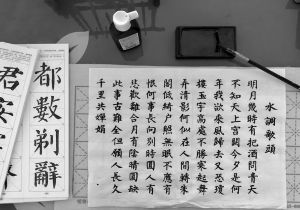

漢字(Kanji)
ประวัติความเป็นมาของคันจิ คันจิ (漢字) คือระบบตัวอักษรที่มีต้นกำเนิดจากประเทศจีน และถูกนำเข้ามาใช้ในประเทศญี่ปุ่นจนกลายเป็นส่วนสำคัญของระบบการเขียนภาษาญี่ปุ่นในปัจจุบัน คำว่า “คันจิ” ในภาษาญี่ปุ่นมีความหมายโดยประมาณว่า “ตัวอักษรของชาวฮั่น” โดยคำว่า 漢 หมายถึงราชวงศ์ฮั่นหรือชาวฮั่น และ 字 หมายถึงตัวอักษร จุดกำเนิดของคันจิ คันจิมีต้นกำเนิดจาก อักษรจีนโบราณ ซึ่งมีประวัติยาวนานหลายพันปี หลักฐานสำคัญที่แสดงถึงพัฒนาการของอักษรจีนยุคแรกคือ อักษรบนกระดูกเสี่ยงทาย (甲骨文) ซึ่งพบในประเทศจีนและมีอายุย้อนกลับไปถึงช่วงราชวงศ์ซาง อักษรในยุคแรกมีลักษณะคล้ายภาพของสิ่งต่าง ๆ เช่น คน สัตว์ ดวงอาทิตย์ และดวงจันทร์ ต่อมาจึงมีการพัฒนาให้เป็นสัญลักษณ์ที่ซับซ้อนมากขึ้น เมื่อเวลาผ่านไป รูปแบบตัวอักษรจีนมีการเปลี่ยนแปลงหลายยุค ตั้งแต่อักษรบนกระดูก อักษรสำริด อักษรตราประทับ อักษรเสมียน จนพัฒนามาเป็นรูปแบบตัวอักษรที่มีความเป็นมาตรฐานมากขึ้น คันจิเข้ามาสู่ประเทศญี่ปุ่น ในช่วงประมาณ คริสต์ศตวรรษที่ 5–6 ญี่ปุ่นเริ่มรับระบบการเขียนจากจีนและคาบสมุทรเกาหลีเข้ามาใช้ เนื่องจากญี่ปุ่นในเวลานั้นยังไม่มีระบบตัวเขียนของตนเองอย่างเป็นทางการ ในระยะแรก คันจิถูกนำมาใช้เพื่อบันทึกภาษาจีนที่เกี่ยวข้องกับศาสนา การปกครอง และความรู้ต่าง ๆ ต่อมาชาวญี่ปุ่นพยายามนำคันจิมาใช้เขียน ภาษาญี่ปุ่นที่เป็นภาษาพูดของตนเอง ทำให้เกิดวิธีการอ่านคันจิหลายแบบความสำคัญของคันจิ คันจิช่วยให้การอ่านภาษาญี่ปุ่นเข้าใจง่ายขึ้น เพราะภาษาญี่ปุ่นมีคำจำนวนมากที่ออกเสียงเหมือนกันแต่มีความหมายต่างกัน การใช้คันจิช่วยแสดงความหมายของคำได้อย่างชัดเจน ตัวอย่างเช่น เสียง “こうしょう” อาจเขียนด้วยคันจิได้หลายแบบและมีความหมายแตกต่างกัน เช่น 交渉 หมายถึง “การเจรจา” ในขณะที่ 高尚 หมายถึง “สูงส่ง/ประณีต” การมองเห็นคันจิจึงช่วยให้ผู้อ่านเข้าใจว่าคำนั้นหมายถึงอะไร
